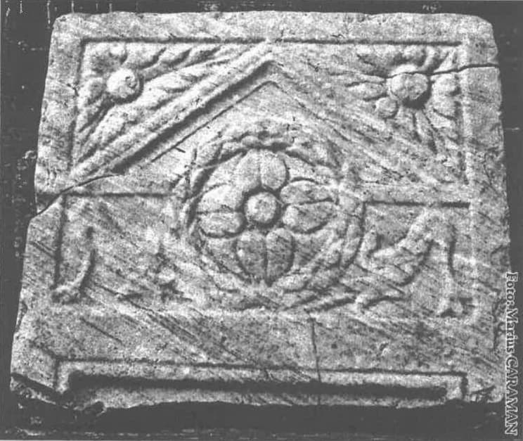

Am fost budist timp de 10 ani. Am fost hirotonit după ce am studiat timp de 7 ani cu profesorul meu într-o mică familie din descendența Nyingma a budismului Vajrayama (tibetan). În acea familie am avut un maestru spiritual pe care l-am iubit și încă îl iubesc. El a fost și continuă să fie un exemplu de bunătate în viața mea. Prin instruirea lui am ajuns să văd lumea cu ochii larg deschiși și cu inima mai mare. Am fost hirotonit ca Ngakpa în familia Nyingma. O hirotonie Ngakpa este o hirotonie preoțească tantrică. Deși sunt făcute niște jurăminte (damstig), acestea nu se bazează pe celibat sau înfrânare de la carne și alcool. Sangha noastră (comunitatea de practicanți) nu era una de renunțare, ci urma instrucțiuni de bază în tantra și dzogchen, ambele bazate pe transformare în loc de renunțare și pe neașteptate momente de vizualizare interioară, care oscilează în durată și intensitate, conducând spre rigpa (o stare a minții și a percepției bazată pe relaxare în cadrul stării naturale de iluminare). Acele momente luau naștere prin intervenția energetică a profesorului nostru sau prin abilitatea noastră de „a ne relaxa” în textura și țesătura experiențelor noastre de a fi și a nu fi – experiențe determinate de practicile cu care fuseserăm învățați. Peste ani, acele momente par să se manifeste în felul de a privi lumea cu tot mai multă bunătate, recunoștință și compasiune. Profesorul meu obișnuia a spune că budismul este 99% metodă și 1% adevăr. În budism, practica este folosită pentru a dezvolta o limpezime și un simț al conștienței ce îi permite cuiva să deosebească o realitate ne-denaturată de o minte nevrotică și de obiceiuri nevrotice de a reacționa.
Eram o familie non-liturgică și practicam statul în tăcere, cântece yoghine și seturi de exerciții psiho-spirituale și fizice ca nucleu al practicilor nostre. Am întreprins pelerinaje la locurile sfinte din Nepal și am efectuat retrageri împreună cu profesorul meu și cu frații și surorile mele vajra, atât în Statele Unite cât și în Țara Galilor. Acele retrageri, fie de grup fie individuale, au fost foarte importante în viața mea și pot să afirm în mod categoric că am avut unele „deschideri” de vedere, lărgiri ale perspectivelor și experiențe pe care i le atribui profesorului meu și practicilor care mi s-au predat.
Într-o după-amiază, la sfârșitul lui ianuarie 1999, m-am îndreptat spre altarul meu pentru obișnuita mea practică zilnică. De obicei încep cu cântec yoghic și mantra, iar apoi continui cu stat în tăcere. Am aprins lumânările și după ce mi-am sfârșit cântecul și mantra am început practica mea de tăcere. Nu pot spune exact de când stăteam, când mi-am auzit propria voce rostind cu cuvintele mele: „Îmi lipsește Iisus”. Am spus-o cu voce tare. S-ar părea că venise mai curând prin mine decât că am spus-o eu, însă acolo nu mai erau alte voci. E limpede că eu am spus-o.
Când am spus că-„mi lipsește Iisus” m-am umplut de dor. Nu știu cum altfel să-l numesc. M-a durut. Am suferit înăuntrul meu. Am simțit o tânjire desăvârșită și nu puteam să cred. Am încercat să-mi reordonez atenția și conștiența și să-mi continui meditația. Adesea în timpul meditației se înregistrează percepții extraordinare, mirosuri, iluzii vizuale, sunete – probabil anomalii psiho-spirituale care te distrag de la sosirile și plecările gândurilor, pe care ești învățat să le lași să apară și să dispară fără a le acorda vreo importanță.
Gândurile vin și pleacă, însă metoda pe care o foloseam căuta să nu mă lipească de nici un gând, deci ea ar fi căutat să evite a urma vreun gând într-o narațiune interioară. Deci am încercat să privesc aceasta ca pe un nyam (experiență în cadrul meditației) și să nu pun prea mare bază pe ea. Nu am reușit să mă adun sau să mă relaxez, deci m-am ridicat. M-am gândit că acestea sunt lucruri din copilăria mea timpurie, pe care mi le proiectez peste meditația mea. Sunt lucruri referitoare la dragostea pe care am dorit-o și nu am primit-o, și trebuie să fie vorba de creștinismul copilăriei mele timpurii. Părinții mei erau creștini numai cu numele, iar eu am fost crescut ca presbiterian mai ales pentru că aceea era biserica cea mai apropiată de noi. În mod cert, părinții mei nu erau niște trâmbițași ai Bibliei.
Mi-am încheiat sesiunea de practică și am mers în bucătărie și am început a deretica. Am făcut treburile casei și nu m-am mai prea gândit la experiența avută, cu excepția stării continue de dor, care nu părea să se risipească. Se părea că nu pot s-o înlătur, oricât m-aș fi străduit. Exista o teribilă tânjire, pe care nu o puteam ignora ori explica. Nu am relatat nimic soției mele despre aceasta, totuși nu puteam să încetez a mă gândi la ea sau să aflu vreo ușurare pentru durerea mea. Am petrecut împreună o seară obișnuită, privirăm la televizor pentru un timp, stăturăm de vorbă iar apoi eu m-am dus să pictez în studio. Eu sunt artist plastic, iar atelierul meu este atașat de casa noastră, iar eu dorm multe nopți acolo, dacă pictez până târziu. După câteva încercări agitate de a lucra la o pânză ce o începusem, am adormit.
În acea noapte, la ora 3 dimineață, am fost trezit de o „prezență” în camera mea. Era un Dor. Nu văd cum l-aș numi altfel. Am simțit în odaie o „prezență a Dorului”. M-am neliniștit că intrase cineva în casă. M-am dat jos din pat și am verificat toate încăperile. Nu era nimeni, cu excepția soției mele, iar ea părea să doarmă. Din moment ce m-am trezit, am decis să fac niște practică, și am mers la altarul meu din studio. Am meditat preț de vreo 30-45 de minute și apoi am readormit. A doua zi m-am asigurat că toate ușile erau încuiate și am căutat în jurul casei să văd dacă pot găsi ceva ce să explice „prezența”. Nu avem animale, și am întrebat-o pe Diane dacă se trezise cumva în timpul nopții pentru vreun motiv oarecare. Avusese un somn adânc și m-a întrebat dacă era ceva în neregulă. I-am spus că m-am trezit și nu am putut să dorm o bucată de timp. Am ezitat să amintesc ceva despre simțirea „prezenței”. Nu am vrut să o sperii și nici nu am vrut să creadă că sunt nebun.
A doua noapte am fost din nou „trezit” din somn. Nu pot spune cu exactitate ce am simțit în afara faptului că această „prezență” era în cameră. Fără lumini, fără halucinații, fără zgomote, fără surle și tobe, totuși aveam un sentiment și mai clar că am fost trezit de o „prezență”. Pot spune numai că a fost o „prezență a Dorului”. Mă durea înăuntrul meu și tânjeam după ceva ce nu puteam să descriu. Mă simțeam la mii de kilometri de casă.
Ar trebui să spun aici că viața mea era destul de fericită. Eram căsătorit de 25 de ani și cu soția mea ne iubeam. Suntem amândoi artiști și avem o afacere profitabilă în acest domeniu. Aveam o căsuță cu grădină într-o mică localitate de pe coastă, lângă San Francisco, și pe care o iubeam la rândul ei. Aveam un minunat îndrumător spiritual și depusem jurăminte și eram dedicat familiei și căii mele budiste. Eram destul de sănătos pentru un om gras de cincizeci-și-ceva de ani. Totul era în general OK. Nici o criză majoră. Nu era nimic care să confirme experiențele pe care le aveam, nici incredibila stare de dor pe care o trăiam. Mă simțeam de parcă aș fi fost îndrăgostit, dar nu știam de cine sau de ce anume. Eram ca un adolescent îndrăgostit. Nu puteam să mă opresc a simți această durere și acest dor și această confuzie. Totul începuse când am spus „Îmi lipsește Iisus”, totuși nu puteam crede că aceea era cauza durerii mele. Trebuia să fie altceva, dar nu știam ce. Încercasem să clasific în mod rațional, făcând un inventar al posibilelor surse, motive, evenimente care ar fi putut da naștere acestui dor. M-am blocat. Nimic din ceea ce am înșiruit nu părea un motiv pentru experiența dorului, și cu siguranță nu pentru simțirea unei prezențe nocturne în camera mea.
Timp de o săptămână am fost trezit în fiecare noapte la ora 3. Începeam să fiu puțin speriat. Nu aveam explicație pentru ceea ce se întâmpla, nici vreo idee despre cum să îi fac față. Am realizat că este dincolo de tot ceea ce experimentasem vreodată și speram că profesorul meu poate să mă ajute atât să înțeleg cât și să fac față experienței. În cele din urmă l-am contactat pe profesorul meu în Wales și i-am relatat întreaga secvență a experiențelor. Mi-a dat numele unei „zeități” tibetane să o invoc și o mantra asociată acelei „ființe conștiente” (sangha noastră folosea termenul de „ființă conștientă” în locul tradiționalului termen „zeitate”). A spus că, dacă experiențele continuă, să fac practica și să recit mantra pe care mi-o dăduse.
În noaptea aceea am fost din nou trezit de sentimentul unei „prezențe”. M-am dus la altarul meu și am aprins lumânările. Am șezut pentru un timp în meditație tăcută, înainte de a folosi mantra și de a chema zeitatea budistă pe care fusesem învățat s-o invoc. A fost o meditație puternică. Era o liniște adâncă și am simțit un calm și o nemișcare ce părea că se răspândește în cameră. Am strigat numele „ființei conștiente”, după cum fusesem instruit de Rinpoche (termen onorific pentru un profesor Vajrayana, care literal înseamnă „piatră prețioasă”). Spre surprinderea mea am auzit o voce spunând: „Nu sunt acela”. Nu pot spune de unde veni vocea. A sunat ca vocea mea, chiar dacă nu-mi amintesc ca eu să fi rostit cuvintele. Nu pot spune cu exactitate dacă vocea a fost interioară sau exterioară, însă a fost o voce care în mod limpede și distinct a spus: „Nu sunt acela”.
M-am înfiorat. Am stat tăcut și consternat. M-am ridicat și am ieșit. Era pe la 3:30 dimineața și era o lună palidă abia vizibilă deasupra oceanului. Am șezut pe treptele de la intrare și am început să plâng. Durerea și dorul dinăuntru nu se micșorase ci părea că s-a mărit. Nu mai știam ce să fac. Știam că ceva se întâmpla; doar că nu știam ce. Am plâns cu toată ființa mea. Am plâns în hohote. În final, am ridicat capul și am întrebat: „Cine ești?”
Când am rostit aceste cuvinte, s-a întâmplat ceva incredibil. Nu am cum să explic nici măcar cum sau de ce s-a petrecut. Nu am nici un drept nici măcar să încerc a explica ce s-a întâmplat, nici să afirm că eu aș înțelege sau aș merita într-un anumit fel ceea ce s-a întâmplat. Însă când am rostit acele cuvinte, m-am umplut cu o Lumină lină. Nu a fost vizibilă în sensul obișnuit al cuvântului. Era o luminozitate care m-a umplut. Nu pot descrie Lumina, nici nu pot spune cum anume poate o lumină să aducă „cunoștință”. Am știut însă că o Lumină venise înăuntrul meu și mă cunoscuse personal. Știu că pare imposibil, dar s-a întâmplat. Lumina nu numai că mă cunoștea, pe mine, Miles, un bădăran impetuos, dar mă iubea, chiar mă iubea. Să-mi fie iertată infatuarea, dar așa am simțit. Nu am nici o cale de-a explica cum anume am știut asta, dar am știut-o. Nu știam cum să o numesc. Mă simțeam stângaci încercând să spun Dumnezeu sau Hristos, totuși am simțit că are o legătură cu Dumnezeu și Hristos/Logosul. Totuși, nu puteam să mă hotărăsc să spun asta. Părea prea imposibil și prea încărcat de tot ceea ce refuzasem în Creștinism (creștinismul protestant din copilăria mea). Era imposibil să rostesc cuvintele, deși simțeam că o bucată din Dumnezeire se rupsese în mine, și aceea era Iubirea. Am simțit Iubire. Am simțit Iubirea dumnezeiască. Am simțit o Iubire care mi se adresa personal, ca și cum chemase numele meu atunci când veni în mine. Totuși părea să se fi aflat mereu înăuntrul meu, chiar dacă eu nu știusem. Venise înăuntru și tâșni înafară în același timp. Știu că este greu chiar și de imaginat și nu am alte cuvinte ca să o explic. Dacă ar exista o altă modalitate de a o explica mai clar, aș face-o.
Am căzut în genunchi și m-am aruncat la pământ. Nu pot spune cât timp am stat așa, dar în cele din urmă m-am reașezat pe scări și am plâns din nou. Nu am cum să explic ce am simțit. Poate este greșit să o spun, dar am simțit cuvintele micșorându-se pe măsură ce Lumina intra și am simțit o cunoștință în mine ce părea a fi născută din Iubire. Știam că Dumnezeu mă iubește, chiar dacă nu puteam rosti cuvântul „Dumnezeu”. Știam că Hristos m-a chemat chiar dacă nu puteam rosti cuvântul „Hristos”. Ajunsesem în budismul meu la unele conștientizări, unele mici licăriri de înțelegere a Marii Opere, prin intermediul profesorului meu și a practicii mele – însă nimic asemănător acesteia. Ardeam în interiorul meu de Iubire și de o cunoștință a Luminii. Nu era o ardere reală, vizibilă și palpabilă, totuși m-am simțit de parcă străluceam în interior. Nu puteam să spun dacă Dumnezeu tânjea după mine, sau eu tânjeam după Dumnezeu. Aproape că ne-am întâlnit în tânjire. Pentru prima dată, Dorul părea a fi experiența prezenței lui Dumnezeu și a relației mele cu El. În budism vorbeam adesea despre găsirea prezenței conștienței noastre în împrejurările vieții. În tantra, tot ceea ce este experimentat prezintă și posibilitatea experimentării în acel moment a iluminării. Practicile noastre se bazau adesea pe găsirea prezenței conștienței în emoție ori în situațiile de viață pe care le experimentam. Se pare că descoperisem prezența propriei mele conștiențe în dorul după Dumnezeu ca Lumină și Iubire și în dorul Lui după mine.
Pentru prima oară, în viața mea exista Iubire dumnezeiască, o Iubire care cunoștea numele meu. Nu știu cât am stat pe trepte. Cerul părea să se lumineze dar nu pot spune când am intrat înapoi în casă. Sunt sigur că în cele din urmă m-am culcat dar nu-mi amintesc exact când a fost, chiar dacă m-am trezit în pat cu hainele pe mine.
A doua zi dimineața, când i-am povestit soției ce mi se întâmplase, i-am spus că o Lumină-Care-nu-este-lumină-Care-îmi-cunoaște-numele a pătruns în mine. Nu am știut cum altfel să o numesc. Am descris experiența dar încă nu puteam să mă hotărăsc să rostesc cuvântul Dumnezeu, nici nu puteam folosi numele lui Hristos.
Bineînțeles, soția mea, fiind o bună californiană m-a întrebat dacă nu eram drogat. Amândoi am râs. Trecuse multă vreme de când asta ar fi putut fi o posibilitate (fumatul de orice fel este interzis în sangha noastră); însă ea a ascultat, și i-am spus toate detaliile. Am știut în acel moment că totul era altfel. Într-un fel, Iubirea intrase în scenă, iar viața așa cum o știam începuse să se destrame. Profesorul meu era ateu, iar budismul pe care îl studiasem, în mod cert nu prezenta ideea unui Dumnezeu creator ori a unei Divinități care este sursa Iubirii. Noi vorbeam despre compasiune și înțelepciune, bunătate și conștiență, însă rar era menționat cuvântul „iubire”, și cu siguranță nu în contextul unei Iubiri divine. Pot să spun că soția mea era speriată. Oricât de mult am fi glumit noi pe tema aceasta, ea simțea că totul se duce pe apa sâmbetei. Nu știa unde mă va duce asta. Nici eu, la rândul meu, nu știam. Totul devenise destul de stabil în viața noastră. În noaptea aceea, totul a fost zguduit din temelii, iar soția mea știa asta.
Atunci când Lumină-Care-nu-este-lumină-Care-îmi-cunoaște-numele m-a pătruns cu ea însăși, am cunoscut lucruri pe care nu le puteam explica. Am experimentat o Iubire personală, de la o Sursă care se afla dincolo de tot ce experimentasem eu înainte. A fost minunat și teribil în același timp.
De ce nu am putut întrebuința cuvântul Dumnezeu sau Hristos? Ce m-a reținut? Părea prea mult chiar să mă gândesc că acesta era Dumnezeu/Hristos, totuși pentru prima dată părea posibil. Era posibil ca aceasta să fie Iubirea lui Dumnezeu. Era posibil ca aceasta să fi fost o experiență a lui Hristos. Cred că, în unele privințe, asta era prea deplasat de afirmat. În mod cert, nu vroiam să fiu creștin. Timp de mulți ani, îi criticasem pe creștini numindu-i ipocriți și idioți. Ca budist, am fost ceva mai indulgent în privința asta, dar încă nu aveam nici o intenție de a fi creștin, nici vreo dorință să explorez calea aceea. Nu m-am putut lepăda niciodată cu adevărat de conceptul de Dumnezeu, chiar dacă Rinpoche spunea că trebuie să tratez ideea de Dumnezeu în relație cu faptul că l-am acuzat pe Dumnezeu pentru multe lucruri din viața mea, iar el a spus că, pentru a mă dezvolta spiritual, trebuie să las deoparte această învinuire. A avut dreptate.
O lume se deschidea iar alta se micșora. Jurămintele pe care le depusesem ca să devin un Ngakpa erau considerate jurăminte pe viață. Angajamentele pe care le făcusem erau văzute ca angajamente „pe viață” atât de profesorul meu cât și de comunitatea mea. Acum recunoșteam faptul că există un Creator al Iubirii, o Sursă a Iubirii și un Duh al Iubirii care erau inexplicabile pentru budismul meu, iar din experiența mea, o realitate ce nu putea fi tăgăduită. Nu aveam nici o categorie în care să încadrez experiența mea. Ateismul profesorului meu părea să excludă posibilitatea ca el să înțeleagă realitatea ce tocmai se născuse în viața mea. Avusesem o experiență care părea să răscolească budismul meu. Structura practicilor noastre și învățătura profesorului nostru părea limitată și, trebuia să admit, incompletă. Știam că profesorul meu se înșela în privința lui Dumnezeu. Ce trebuia să fac?
Pantelimon David Walker este acupuncturistul meu și este membru al Bisericii Ortodoxe din America (OCA). Discutaserăm timp de luni de zile despre budism și creștinism în timpul tratamentelor mele. Aveam programare la el săptămâna ce urma. După ce ne-am salutat mi-a spus:
-Am pentru tine o carte care-ți va place!
Era Hristos – eternul Tao de Ieromonah Damaschin, o carte care Îl prezintă pe Iisus Hristos ca plinătatea harului și a adevărului, iar creștinismul ortodox răsăritean ca fiind împlinirea a ceea ce oamenii au căutat în religiile și filosofiile orientale. În noaptea aceea am studiat cartea cu atenție. Habar nu am când m-am culcat, însă am citit-o zile în șir, iar ea mi-a oferit o bază pentru a cataloga experiențele pe care le avusesem în legătură cu Lumina-Care-nu-este-lumină-Care-îmi-cunoaște-numele.
Știam că există o Sursă a Iubirii și o Energie a Iubirii, totuși am ezitat să o numesc Sfântul Duh. Îmi lăsasem creștinismul copilăriei în urmă cu mult. Cuvintele încă mi se împotmoleau în gât.
David a sugerat să încerc să merg la o biserică ortodoxă și a menționat o biserică a OCA din San Francisco. Cu toate acestea, părea destul de ciudat, prea multă obligație față de o religie pe care o părăsisem. Vroiam ceva ce să nu fie bazat pe o așezare instituțională. Ultimul lucru pe care l-aș fi făcut ar fi fost să mă amestec în vreo biserică. La urma urmelor, eram budist. De ce mă lăsam târât într-o altă religie, cu atât mai mult creștină? Luasem un angajament față de profesorul meu și familia mea. Nu ar mai trebui să explorez, la vârsta aceasta, nici o altă formă de venerare. Însă budismul meu nu recunoștea experiențele pe care tocmai le avusesem în legătură cu Divinul. Știam că experiențele cu Lumina-Care-nu-este-lumină-Care-îmi-cunoaște-numele erau reale și adevărate. Profesorul meu spunea că nu există Dumnezeu, dar eu știam că experimentasem Iubirea divină în mod personal.
Am rezistat ideii de biserică, cu toate că Ortodoxia are o tradiție contemplativă veche și o cale de a lucra la adâncirea și lărgirea unei rațiuni personale de transformare a sinelui în relație cu Divinul. Cartea părintelui Damaschin m-a făcut receptiv măcar la posibilitatea explorării unei tradiții în creștinism, ce era mult dincolo de orice tradiție creștină despre care auzisem vreodată. Am sunat la Catedrala Sf. Treime (biserica OCA din San Francisco pe care mi-o sugerase David). A răspuns un bărbat și am întrebat dacă slujbele sunt în engleză.
- Pe rupte! răspunse el cu un accent rusesc.
M-am prăpădit de râs. Chiar mi-a plăcut acest simț al umorului. Am notat ora Liturghiei și i-am mulțumit.
Într-o duminică de februarie m-am trezit, m-am îmbrăcat și i-am spus soției că merg să caut o biserică. A fost șocată.
- Poftim? a strigat.
- Știu. Nu spune nimic. Mă întorc repede.
Ploaia cădea torențial iar străzile erau destul de goale. Am mers cu mașina în San Francisco și aveam o vagă idee despre o biserică rusească cu turnuri albastre aflată în centru. Am văzut, în cele din urmă, turnurile și crucea. În jurul zonei respective nu este niciodată loc de parcare, deci m-am apropiat și mi-am zis:
-Dacă este loc de parcare voi opri, dacă nu, voi merge la Burger King.
În momentul în care am spus asta, cineva a ieșit cu mașina dintr-un loc de parcare de peste drum de biserică.
-Bine, bine, voi merge!
Am intrat în biserică în data de 7 februarie 1999. Nu știam la vremea aceea, dar era Duminica Fiului Risipitor.
În tantra, în practica individuală, sunt folosite toate câmpurile senzitive. Simțurile nu sunt negate, ci folosite pentru deschidere și relaxare în cadrul stării naturale de iluminare. Când am pășit în biserică am simțit o senzație de lumină și mireasmă. Am fost întâmpinat la intrare și mi s-a urat bun-venit. Când am fost întrebat dacă sunt ortodox, am răspuns repede (și probabil brusc) că nu sunt creștin, ci budist. Am stat în spate și am privit. De cum a început Liturghia, muzica și cântarea și citirile păreau a umple spațiul la fel ca și lumina și parfumul. Întreaga slujbă părea să devină un ritual elaborat al simțurilor. A fost minunat și m-a speriat foarte tare. Era ceva care se simțea a fi bun. Dacă nu ar fi trebuit să fie atât de creștin… După slujbă am fost rugat să mă alătur celorlalți la masă. Am făcut-o. Se purta un dialog oarecum interesant pentru mine și se manifesta interes chiar față de budismul meu. Am plecat simțind că descoperisem un nou tip de creștinism. Cu siguranță nu era creștinismul copilăriei mele. M-am reîntors duminica următoare.
Am început a asculta cuvintele Liturghiei. Curând am început a veni la unele dintre slujbele de seara și am fost uimit de ceea ce se citea. Nu auzisem niciodată de o teologie care să fie cântată odată cu citirea. Începeam să realizez tot mai mult că se găsea în Ortodoxie un creștinism ce era mult mai vast și mult mai profund decât credeam. Și am început să aud referiri la Lumină, o Lumină ce părea a avea multe în comun cu experiența mea a Luminii-Care-nu-este-lumină-Care-îmi-cunoaște-numele. Era chiar și o teologie care explica cum anume, prin Lumina Sa, suntem chemați și iubiți de Dumnezeu Tatăl, Logos-ul și Duhul Sfânt. Începeam să fiu tot mai deprins cu cuvintele Dumnezeu și Hristos. Bineînțeles că soția și prietenii s-au simțit foarte stânjeniți auzindu-mă folosind acele cuvinte supărătoare. Cei mai mulți dintre prieteni deveniră tăcuți atunci când aflară că frecventam o biserică creștină, cu atât mai mult una creștin-ortodoxă. Încă frecventam grupul meu budist iar atunci când veni profesorul meu, în luna martie, știam că ar fi trebuit să stăm de vorbă. Mă simțeam ca și cum m-aș sustrage într-un fel, mergând la o biserică creștină, și nu vroiam asta. Însă trebuia să încerc a cataloga experiențele mele, și simțeam că biserica oferea posibilitatea de răspuns, pe care nici profesorul meu nici familia mea budistă nu păruse a fi în stare să mi-o dea.
Cartea părintelui Damaschin fusese catalizatorul pentru acea explorare, iar revelația Bisericii în viața mea părea aproape o avansare firească de la acea lectură inițială a cărții. Cu cât frecventam mai mult slujbele cu atât simțeam că acesta era locul în care aș putea fi în largul meu ca și creștin. Totuși, trebuie să înțelegeți că eu n-am folosit niciodată acel cuvânt. Încă rezistam. Încă șovăiam. Stăteam la pândă pe marginea creștinismului, în umbră, dar și la lumina lumânărilor. M-am abținut să mă închin sau să-mi fac semnul crucii. Deja mergea prea departe! Eram încă budist. Creștinismul numai îl vizitam. În acest fel puteam încă să urmez și să explorez, dar nu și să fac vreun angajament. Într-o seară, Matushka Barbara, (soția preotului) a trecut pe la mine și m-a întrebat dacă vreau să învăț să-mi fac cruce. Când am spus „Da”, m-am surprins pe mine.
Știu că pare ciudat, dar a-mi face semnul crucii genera o neconcordanță între cum mă vedeam eu și cum începeam eu să mă închin. Era primul semn pe care îl făceam în mod public și care arăta că credeam în Creștinism și începusem să mă văd integrat cadrului creștin. Este un gest atât de simplu, însă deveni primul meu act de recunoaștere a creștinismului, primul semn că mă „îmbrăcam în Hristos”. Fusesem învățat să-i urăsc pe „papiști”. Tatăl meu fusese crescut luteran german și urâse Biserica Catolică. Încă am asta în mine. Însă mi-am făcut cruce în seara aceea și în alte seri, pe măsură ce începeam să particip la tot mai multe slujbe și să caut în Ortodoxie răspunsuri și o nouă formă de închinare.

În budismul Vajrayana profesorul este văzut de fiecare ca o ființă iluminată și care reprezintă calea fiecăruia înspre iluminare. Credinciosul se închină în fața profesorului său în semn de deplin respect și de dependență față de acesta în vederea avansării și realizării pe plan spiritual. M-aș închina înaintea profesorului meu fără nici o rezervă. În Biserica Ortodoxă, se închină înaintea Tatălui și a Fiului și a Sfântului Duh ca act de evlavie, și înaintea imaginilor sfinților ca un act de cinstire și respect. Încă nu aș fi făcut închinăciunile. Era ceva în încăpățânarea mea ce nu puteam să-mi explic. Știam că este ciudat să fii capabil să te pleci înaintea unui profesor și să nu o faci înaintea lui Dumnezeu. Într-un fel părea mai ușor a crede un om decât a crede Divinul. Mi-aș fi făcut cruce dar nu m-aș fi plecat. Fusesem literalmente dat jos din pat, chemat într-un mod pe care chiar și eu se pare că l-am auzit, și avusesem într-un mod personal o incredibilă experiență a Luminii și a Iubirii, și totuși mândria mea și încăpățânarea încă rezistau unei mai bogate și mai depline exprimări a evlaviei. Nu m-aș pleca. Nu m-aș înclina înaintea lui Dumnezeu. Ceva încă rezista chemării lui Hristos și a Bisericii Ortodoxe.
Postul Mare este o perioadă de intensă evaluare spirituală. Întreaga Biserică pornește în mod colectiv împreună cu Hristos într-o călătorie spre Ierusalim. Toate cele 40 de zile devin o dramă cosmică suspendată într-un fel de timp pe care nu-l mai experimentasem în budism. Timpul părea să se dilate aproape proporțional cu lungimea slujbelor. Într-un fel, timpul era folosit pentru a transcende timpul.
Luasem parte la ritualuri lungi în budism. Simțisem, ocazional, că luaseră sfârșit mai repede decât mă așteptasem. Însă niciodată nu experimentasem timpul într-o dimensiune eternă. În Biserică Ortodoxă, mărirea lungimii slujbelor și a Liturghiilor părea să se prăbușească într-o atemporalitate pe care niciodată nu o simțisem atât de intens. Fiece cuvânt al imnurilor sau al slujirii părea să fie îndreptat spre mine. Fiecare vers despre cum e să fii pierdut și confuz și înșelat de împrejurările vieții era citit pentru mine. Am fost găsit de Iubire și încă eram pierdut! Am încheiat fiecare seară simțind că tot ceea ce era cântat sau psalmodiat era ceea ce aș fi spus eu, dacă aș fi putut spune ceva atât de frumos și de adevărat. Am lăsat corul să cânte laudele mele și cantorul iubirea mea. Pe măsură ce Postul se adâncea și devenea mai cuprinzător și (trebuie să spun) mai dureros, am început să experimentez în Biserică clipe de care nu avusesem parte nicăieri altundeva.
Chiar dacă, în calitate de budist, petrecusem ore întregi în meditație și săptămâni de retragere solitară, timpul nu ajunsese niciodată atât de inert. Slujbele din Postul Mare începură să mă transforme. Într-o noapte, în timpul uneia dintre slujbele Postului, genunchii mei s-au plecat. M-am pomenit îngenunchind înaintea lui Dumnezeu și m-am simțit groaznic la gândul că înainte mă abținusem să o fac. M-am simțit ca un prost și ca un idiot mândru. Totul în mine îmi vorbise despre Marea Inimă bună a lui Hristos, iar eu refuzasem îmbrățișarea Lui. Când fruntea mea atinse pardoseala, Dumnezeu îmi frânse inima. Am plâns în hohote. Când veni părintele Victor să tămâieze icoana de lângă mine, știam că mă auzea plângând. Nu mă puteam opri. Eram atât de jenat! Mă simțeam atât de expus! Oameni cu care eram laolaltă de săptămâni întregi stăteau lângă mine în biserică. Mă văzuseră arogant în budismul meu, mă văzuseră stând deoparte. Mă văzuseră făcându-mi cruce și încă având rezerve. Iar acum vedeau genunchii mei îndoindu-se și fruntea mea atingând pământul și mă văzură plângând când Domnul îmi străpunse inima.
Îmi străpunse inima chiar acolo. Pot arăta locul. Mă chemase în noapte; venise la mine ca Lumină. Acum îmi străpunse inima. Nu pot s-o explic mai clar. Dumnezeu îmi zdrobi aroganța și făcu pentru mine singurătatea imposibilă de acum încolo. Cu iubirea Sa, m-a ținut suspendat în timp, iar eu nu meritam nici măcar o părticică din ea.
Acum eram străpuns de Iubire. Eram un cerșetor. Sunt un cerșetor.
Slujbele de seară deveneau tot mai dese și intense. Soția mea era supărată pe motiv că eram atâta timp plecat și adesea ne contraziceam. Nu primeam prea mult sprijin personal pentru a continua să mă îndrept pe această cale creștină. Prietenii credeau că sunt nebun. Membrii mei shanga nici măcar nu știau de frecventarea în paralel a Bisericii. Cu cât eram mai atras înspre Biserică, cu atât păreau mai mari forțele ce mă trăgeau înapoi. Contradicția și fățărnicia propriei mele participări ca budist într-o Biserică creștină îmi erau evidente chiar și mie.
Până în noaptea aceea nu realizasem că nu este cale de întoarcere. Eram îndrăgostit și trebuia să mă apropii cât puteam de mult de Sursa Iubirii. Cred că am și înnebunit puțin, într-o vreme. Obișnuiam să merg pe stradă și, văzând o pereche în vârstă să fiu potopit de lacrimi. În biserică, stăteam în colțul meu și mă simțeam ca un cerșetor încălzindu-se la un foc.
I-am scris atât părintelui Damaschin, care se afla în Alaska, cât și parohului Catedralei Sf. Treime, părintelui Victor Sokolov, și le-am spus despre ceea ce mi se întâmpla și despre nevoia mea crescândă de a aborda posibilitatea explorării mai serioase a Ortodoxiei. Părintele Damaschin mi-a răspuns printr-o minunată scrisoare de încurajare. Am fost foarte mișcat de bunătatea lui. Am cerut să mă întâlnesc cu părintele Victor.
Știam că urma să sosească profesorul meu, și l-am sunat și l-am rugat să stabilească o întâlnire pentru noi doi. Îmi încălcasem jurămintele față de el, nu pentru că începeam să îmbrățișez creștinismul, ci pentru că nu aveam destulă încredere în el, ca să înțeleg în mod rațional experiența Luminii-Care-nu-este-lumină-Care-îmi-cunoaște-numele. De când adoptase o poziție ateistă, am simțit că nu ar înțelege a priori esența experienței Luminii. Atunci mi-am călcat jurămintele. Am violat încrederea profesor-elev. Însă prin însăși această breșă, eu eram în stare să mă deschid unei mai depline experiențe a Duhului Sfânt, să deschid o parte din mine pe care mă obligasem să nu o deschid, din pricina jurămintelor mele.
Acele legăminte budiste au fost într-o vreme centrul identității și vieții mele. Am încercat să le iau în serios. Îl iubeam pe Rinpoche. Încă îl iubesc. Am simțeam o incredibilă responsabilitate pentru a continua în mod mistic cu un antrenament al minții și cu o metodă care ajuta oamenii să vadă tiparele ce îi rețineau de la a se relaxa în bunătatea firească a ființei și neființei. Luasem pentru aceasta un angajament, și încă sper că mai există în mine o parte a acelui angajament spre bunătate și eliberare.
M-am întâlnit cu Rinpoche și am început să discutăm. L-am rugat să ne mutăm din camera de zi în camera sa, pentru mai multă discreție. Știu că a simțit o jenă. I-am spus ce se întâmplase, am încercat să explic pe de-a-ntregul experiența Luminii-Care-nu-este-lumină-Care-îmi-cunoaște-numele. Cred că a văzut pe mine că experiența fusese reală. Probabil se vedea din lacrimile mele. Eram din nou pierdut în aceste lacrimi de bucurie și teroare. Mi-era teamă că tăiasem un tub care mă hrănea spiritual. Cerusem să fiu exclus din fluxul de energie ce curge prin univers asemenea unui râu. Fusesem scos din torent. Eram un ex-budist. Toți zeii mei fuseseră îndepărtați: imaginile mele despre conștiență, despre modul în care se reflecta lumea. Yidam-ii și protectorii* cu care împărțisem o lume nu mai erau acolo pentru mine. Era o pierdere ciudată, dar însemnată.
Yidam-ii sunt o parte a cosmologiei tibetane a „ființelor energetice” pe care le invocă budiștii.
Protectorii sunt păzitorii învățăturii budiste.
Deodată am cerut să fiu eliberat din legămintele mele. Parcă răbufnise din gura mea! M-am simțit îngrozitor. Mi-am auzit propriile cuvinte cerând pentru mine să fiu eliberat de legămintele mele, și am simțit că trădasem un om pe care îl iubeam și care mă iubea la rândul lui foarte mult. Fusese părintele meu spiritual timp de aproape opt ani. Știam că îl rănesc. Îl răneam pentru că mă iubea și eu o știam, și fiindcă luasem un angajament să mă alătur curentului familiei înainte ca toate ființele să fie eliberate. Era mai mult decât un legământ personal față de el. Știam asta. Acele metode de vizionare și identificare a vastului orizont de ființe și de lumi și de energii au fost punctele de referință centrale ale vieții mele. Există în budism curente familiale ce au cosmologii proprii și moduri specifice de a vedea lumea. Toate se raportează la bazele religiei: compasiunea și conștiența. Era mai mult decât o shanga cea din care ceream să fiu exclus.
Totul era conturat în tristețe. Rinpoche spuse că mă va elibera din legămintele mele. Spuse că aș putea „explora” calea creștină timp de un an de zile, și că în decursul acelui an eu aș putea să mă întorc la legămintele mele, dacă aș vrea. A văzut că trecusem printr-o transformare – însă nu am idee ce anume a văzut. Ca întotdeauna, el a optat pentru bunătate și a dat posibilitatea unei destinderi într-un moment teribil. Întotdeauna putea să întoarcă pe dos un moment de flux în existență. De aceea a fost pentru mine un profesor atât de bun. El dăduse peste cap tiparele mele de reacție în fața lumii. Însă experiența Luminii lui Dumnezeu n-a ținut cont de nimic. I-am mărturisit că nu am de gând să mă dau înapoi, că intenționez să mă adâncesc în aceasta cât pot de mult.
Mi-a spus că singura mea responsabilitate față de el este să fiu un bun creștin.
Cred că am plâns împreună. Așa îmi amintesc scena. Însă se poate să fi fost doar eu cel care a plâns. Am plecat oarecum șocat. Mă simțeam ca și cum ar fi murit cineva. Am avut un sentiment teribil, ca atunci când se petrece un accident și într-o secundă totul se schimbă. Există acel moment culminant de certitudine și groază când ceva se naște și altceva piere. Rinpoche încercase mereu să ne arate cum să transformăm aceste momente în puncte de conștiență.
Mergeam cu mașina spre casă, pe Bay Bridge, când mă lovi pe neașteptate gândul că dincolo de amărăciune se află un anume sentiment al certitudinii că decizia era cea corectă. Era o ciudată, dulce-amară amintire a Luminii-Care-nu-este-lumină-Care-îmi-cunoaște-numele. Iat-o chiar și în suferință! Am început să rememorez totul, de la chemarea din noapte, când căutasem spărgători. L-am uitat pe Dumnezeu în tot acest timp! Asta e problema mea: L-am uitat pe Dumnezeu timp de douăzeci de ani. Încercam să îmi amintesc prima oară când mi-am făcut semnul crucii și locul unde Domnul îmi străpunsese inima.
În sfârșit, era o destinație în această ciudată confluență de timp, circumstanță și mister. Părea să existe, în această mare dramă și această iconomie a existenței, o Sursă centrală de Iubire golită de sine, mișcându-se printre toate câte sunt și chemând pe toți și pe toate înapoi la Iubirea divină. Era cel mai precis mod în care o puteam eu descrie.
I-am scris prin e-mail părintelui Victor că fusesem eliberat de legămintele mele budiste. Am cerut să mă întâlnesc cu el. Am continuat să particip la slujbele Postului Mare. Când veniră Paștile, eram epuizat. Eram secătuit și gol, cu excepția unei mărunte Lumini, Care stătea undeva în fundal. Totul fusese întors pe dos în câteva luni.
M-am întâlnit cu părintele Victor și stăturăm de vorbă. Mi-a sugerat câteva cărți și m-a încurajat să continui a urmări slujbele. Mi-a amintit că există un cerc de studiu la fiecare câteva săptămâni, după Vecernie. Întâlnirea mea cu părintele Victor a fost foarte plăcută. Nu știa pe atunci, însă îmi dăduse probabil unul dintre cele mai binevenite sfaturi pe care cineva îl putea da unui budist care se gândește la Hristos. L-a rostit repede și într-un mod oarecum nonșalant. Se opri, se întoarse și spuse:
-Chiar și dacă nu ai nimic, pe acela îl oferi!
În acel moment, Domnul a făcut ca lumea să pară îmbelșugată, iar părintele Victor L-a ajutat. Am înțeles că-I pot oferi lui Dumnezeu orice. Îi pot da tristețea mea și melancolia mea, supărarea mea și îndoiala mea. Într-o zi frumoasă, I-aș putea oferi puțină bucurie și un mănunchi de fericire. A fost foarte important pentru mine să aud asta. Chiar dacă a fost sau nu o parafrază a altceva, nu-mi pasă! În acel moment, cuvintele au fost ale părintelui Victor, iar ele fuseseră cu mine dintotdeauna. Nu a mai fost de atunci vreo clipă când eu să nu am ceva să-I ofer lui Dumnezeu.
Cu cât mă apropiam mai mult de Biserică, cu atât mai agitat devenea climatul acasă. Diane îmi ducea dorul și nu a fost tocmai delicată în a o spune. Bineînțeles că după 23 de ani (în momentul acela) știa că subtilitățile nu merg la mine. Sunt prea prost! Cele mai dificile rupturi au fost cele cu prietenii mei dragi din grupul meu budist. Am cerut permisiunea profesorului meu să le spun surorii și fratelui meu vajra (cei mai apropiați din grup) întreaga poveste, pentru ca ei să știe exact ce se întâmplase. Mi-e teamă că nu ne-am înțeles în baza unei aceleiași limbi și experiențe. Indiferent ce am spus că se întâmplase, ei văzură că eu mi-am încălcat jurămintele. A fost foarte greu și dureros pentru ei să audă asta. Era vorba despre perpetuarea unei familii, iar acele legăminte erau parte a angajamentului meu. Supărarea lor era de fapt un semn al devotamentului lor pentru Rinpoche. Se simțeau trădați, răniți și mânioși. Rupeam o legătură spirituală dintre noi. Aveau dreptate. Se așternu astfel o liniște prelungită.
În data de 23 mai 1999, am fost botezat în Biserica Ortodoxă în Catedrala Sf. Treime. Următoarea copie după o scrisoare ce i-am trimis-o părintelui meu, poate exprima puțin din ceea ce a reprezentat pentru mine Taina.
Dragă Părinte Victor,
Astăzi se împlinesc 4 luni de încercări de a accepta misterul Ființei lui Dumnezeu și al profundului Său dor pentru fiecare dintre noi. Știu că acesta este numai începutul. Știu că sunt prea tânăr în aceste lucruri, încât există pericolul ca această euforie să mă determine să cred că cunosc lucruri pe care de fapt nu le cunosc. Însă ziua de azi a fost minunată – plină de minuni.
Uriașa recunoștință pe care am simțit-o astăzi a fost incompletă, estompată. Nici acum nu sunt, nici nu voi fi vreodată capabil să mă umplu de recunoștință față de Dumnezeu, într-un mod care să-I fie de vreun folos Lui. Sunt un simplu exemplu de devotament, însă pentru mine această zi este de un volum ce se varsă, se împrăștie pe podea și umple pivnița întreagă cu recunoștință. Cum pot oare să mă revanșez față de El? Nu mă pot imagina vreodată capabil să exprim această primăvară din mine. Însă dacă aș putea, aș face-o azi. M-aș duce la Dumnezeu și I-aș oferi în dar această zi. Aș goli buzunarele de ziua aceasta și I-aș spune: „Te rog, Doamne, este cel mai bun lucru pe care-l am. Te rog, primește-o de la mine – ziua aceasta!”
Lacrimile mi se scurg pe obraji. Soția mea stă și mă privește de la doi pași. Aud corul. Surprind privirea ei. Te privesc îndreptându-te spre mine. Este ca și încetinit – o secvență de film fără timp. Biserica respiră lumină. Privesc crucea înaintea mea, auriul în lumina difuză a soarelui, albul veșmintelor tale. Cuvintele pe care le rostești sună ca și clopoțeii. Eu doar stau. Sunt doar persoana nemișcată, stând în acest loc minunat. Este o plenitudine pe care nu am cunoscut-o vreodată – sentimentul de a fi cunoscut de Dumnezeu în adâncul ființei mele. Sunt sigur de asta. Crevasele inimii mele, acele locuri întunecoase, ascunse, triste, acele locuri pe care le-am închis pentru Iubire pe tot parcursul vieții mele, par atinse de o Mare Bunătate. Zăpada se topește. O simt înăuntrul meu. Ghețarii se transformă în lacuri… Ușile sunt deschise și vântul mișcă perdelele. Pe jos este un petic de lumină caldă iar fire de praf strălucesc în aer, rotindu-se asemenea modelului fustei unei dansatoare măturând podeaua.
Dragă Părinte Victor, aceasta nu este o a doua șansă – este o primă șansă. Sunt nou vieții, nou pentru această lume. N-am mai simțit o asemenea prospețime. Mă simt curat în interior. Mă simt ca și cum înainte n-aș mai fi văzut soarele. Sunt uimit de ochii oamenilor. Micile încrețituri din jurul gurii lor atunci când zâmbesc… Modul în care dimineața strălucește prin ei și nu numai peste ei… Arată atât de minunați!
Apa m-a spălat. N-am crezut niciodată că aș putea înțelege sau spune asta. Mirul m-a binecuvântat. M-a închis în Trupul unei Bisericii fără timp.
Acesta nu este nici arhetip sau simbol, sau pur și simplu un ritual prins într-o mică biserică din San Francisco. Este real și este nemaipomenit, și este de la Dumnezeu pentru noi toți. Totul în mine mărturisește că este adevărat. Îmi amintesc mâna lui Johann pe brațul meu ajutându-mă să pășesc în râul Iordan. Îmi amintesc raza de lumină și icoana lui Hristos în spatele Ușilor Împărătești. Mi-o amintesc pe Diane plângând pe bancă. Îmi amintesc vocea ta și-mi amintesc cum m-a ținut Dumnezeu sub apă și m-a ridicat și m-a spălat și iar m-a ridicat pentru a arăta întregii lumi că un copil nou s-a născut.
Tu m-ai condus afară din rău, hainele mele se lipeau de mine pe când eu strângeam mâna ta învelită în veșminte – bucurie în inima mea, fiind atent la fiecare pas la zâmbetele și ochii din biserica vie. Pe bănci oamenii așteptau. Soția mea privea, la fel și acei oameni minunați care mă încurajaseră să revin încă de la Duminica Fiului Risipitor – să revin mereu.
Să revin mereu – acea formulă a pocăinței, acea libertate de a mă întoarce – fusese calea mea liberă de întoarcere și de pocăință de când Dumnezeu îmi străpunsese inima. Vă pot arăta locul unde Dumnezeu mi-a străpuns inima în biserică, în Biserica noastră. Vă pot arăta locul unde am șters pardoseala cu mâneca, după ce îngenuncheasem în sfârșit în fața Lui. Cum aș fi putut merge în altă parte? Care loc poate fi mai „acasă”? Vreau să fiu în locul unde Dumnezeu mi-a străpuns inima.
Când m-am apropiat de Potir m-am întors acasă.
Am fost crescut în comuniune, însă niciodată nu luasem parte la Comuniunea euharistică. Astăzi mi-a fost prin har oferită posibilitatea de-a mânca din Trupul și de a bea din Sângele lui Hristos. Nu există cuvinte adecvate pentru aceasta – e un Mister despre care nu pot nici măcar încerca a vorbi. Rămân mut înaintea acestei Taine. Sunt doar peste măsură de recunoscător și mă simt binecuvântat în tăcere.
În sfârșit acasă! Dumnezeu, pentru un anume motiv necunoscut, mă iubește! Pe mine! Știu că e adevărat. Mă iubește așa cum sunt, cu un nume – al meu. Dumnezeu îmi cunoaște numele! Dumnezeu îmi cunoaște inima și creierul și grăsimea și musculatura, și mă iubește. Dumnezeu îmi cunoaște fiecare gând, fiecare temere și fiecare durere, și totuși mă acceptă. Asta e cea mai incredibilă realitate posibilă. O, părinte, ziua de astăzi a fost marele dar al lui Dumnezeu pentru mine și al meu pentru El! Sunt sărac și gol înaintea acestui fapt.
Totuși, sunt plin de El în goliciunea mea. Astăzi am fost golit și tot astăzi am fost umplut. Tu ai ținut în mână vasul pentru Dumnezeu. Ca slujitor al Trupului lui Hristos, ai suflat asupra mea, m-ai spălat și m-ai uns cu mirul Lui. Mi-ai dat să mănânc și să beau. Asta este ceea ce ți-a rânduit El să faci. Însă El a fost cel Care m-a golit pe mine astăzi și El cel Care m-a umplut de Harul Său.
Acesta este Misterul pe care l-am trăit noi astăzi: tu și cu mine și inimile acestea mari și bune care formează laolaltă Trupul Bisericii. A fost călătoria mea și a noastră ca Biserică.
Am fost trezit prin apă și prin Har și prin Iubirea divină. Am fost uns cu mir acum și pentru totdeauna. Am fost reînnoit, găsit și chemat, iertat, iertat și din nou iertat. Mi-a fost insuflată o capacitate de înțelegere a unui Mister care este dincolo de înțelegerea mea. Sunt un prost și un păcătos, însă am fost îmbrățișat de Duhul Sfânt și botezat în fața unei Biserici care va dăinui veșnic.
Ofer ziua de astăzi lui Dumnezeu. Numai mulțumire și rugăciune și tăcere. Noapte bună.
Cu dragoste întru Hristos Domnul,
Nil.1
Note
1 Material preluat de pe site-ul părintelui Iulian Nistea, de la adresa http://www.nistea.com/buddha-convertit.htm. Mulțumiri părintelui Nistea pentru acordul de a prelua materialul în acest volum.
Comentarii